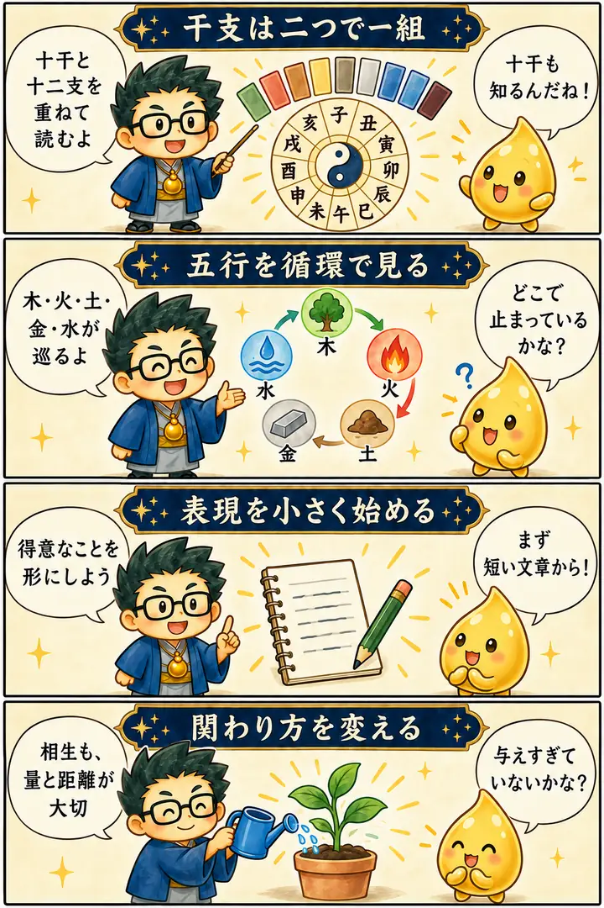

第4期 Zoom講座・第2回
隠された十干（色占い）
この回の要約
十干を「性格の名前」で終わらせず、循環と行動につなげる。
十干と十二支から干支の全体像をつかみ、木・火・土・金・水の陰陽を通して、才能の出し方、人との関わり方、学びの巡りを見直した回です。後半の鍵は「表現すること」と「循環を止めないこと」でした。
4コマ漫画でつかむ

タイムスタンプ
時間を押すと、上の動画がその場面から再生されます。
- 00:00講座の導入
- 01:18干支とは何か・十干と十二支
- 04:20自分の才能と時代の変化
- 10:14循環と転換のタイミング
- 13:44十干キャラクターと動画・SNS発信
- 18:07数と暗号・表と裏の意味
- 20:55才能を開くヒントと神社
- 26:51内側を整えることと行動
- 36:34水瓶座・AI・これからの時代
- 45:48神社参拝と陰陽統合
- 49:18時代のサイクルと五行
- 53:18木火土金水・循環の読み方
- 57:40十干の陰陽・正反対の力
- 59:41人・表現・役割・学びの好循環
- 1:00:45表現と批判への向き合い方
- 1:06:22得意なことと制作・AI
- 1:12:03五行の循環が止まるとき
- 1:15:28五行と親子・関わり方
- 1:16:59相生と相剋の読み方
- 1:20:05十干と精神のパターン
- 1:21:26神社鑑定の考え方
- 1:31:07甲から癸までの各タイプ
- 1:35:41まとめ・陰陽統合のサイクル
質疑応答
※ 公開中の講座ページの内容を、学習用に整理・再構成しています。吹き出しは逐語引用ではありません。
「干支」は十二支だけではない
01:18から見る ▶干支と聞くと、ねずみやうしの十二支を思い浮かべます。
講義では、干支は十干と十二支の組み合わせだと確認しました。今回は甲から癸までの十干を、身近な自然の姿や色の図で見ていきます。
持ち帰り：十干と十二支を別々に確認してから重ねる。
才能は、同じ出し方とは限らない
04:20から見る ▶得意な人のやり方を真似しても、うまくいかないことがあります。
講義では、才能を食べ物にたとえ、そのまま出せるものと扱いに工夫が必要なものを説明しました。自分の特徴に合う届け方を考えることが大切です。
比喩の読み方：フグと刺し身の比喩では、「同じように出しても同じ結果にはならない」という意外な落差を使っています。人を危険と呼ぶための比喩ではありません。
持ち帰り：他人の完成形を真似する前に、自分の強みの扱い方を探す。
同じ五行にも、反対の姿がある
57:40から見る ▶木の人、水の人と分かれば、それで十分でしょうか？
木には大木と草花、水には海と雨という違いがあります。大きく守る力と横へつながる力、広がる水と寄り添う水のように、同じ五行の中にも対照的な働きがあると説明しました。
持ち帰り：五行を一つの性格にせず、陰陽の違いを読む。
学んだら、表現して次へ渡す
59:41から見る ▶学ぶことは好きですが、発信するのは後回しになります。
人が集まったら表現し、対価を受け取り、仲間と役割を担い、必要な知恵を学ぶ。学んだことを人へ渡すと、また人が集まる。この巡りを講義では好循環として説明しました。
持ち帰り：学ぶ量を増やす前に、一つ形にして人へ届ける。
表現が怖い理由を、言葉にする
1:00:45から見る ▶表現すると自分が見えてしまうようで、怖くなります。
この場面では、自分を出す怖さと、否定された経験が話題になりました。講師は、伝えたいものを形にすることを強く勧め、自分が誰に届けたいのかを考える例を示しました。
持ち帰り：復習では、届けたい相手と、試せる小さな表現を一つ決める。
相生でも、与えすぎには注意
1:16:59から見る ▶相生なら、たくさん助けた方がよいのでしょうか？
講義では、水が木を育てる関係でも、水をかけすぎると困るという例が出ました。関係の種類だけでなく、与える量と相手が受け取れる形を見ることが大切です。
比喩の読み方：大きな海の水を草花へ大量にかけるという、規模の合わなさが比喩の肝です。「助けたい」と「受け取れる」のずれを思い浮かべる場面です。
持ち帰り：善意の量を、相手が望む量に合わせて確かめる。
覚えておきたいこと
- 干支は十干と十二支を組み合わせたもの。今回は十干が中心。
- 五行にはそれぞれ陰陽があり、五行×二つの姿で十干になる。
- 学びや知識を、表現や役割へ回す視点を持つ。
- 批判への怖さと、届けたい相手を分けて言葉にする。
- 相生・相剋は善悪の判定ではなく、働きと関わり方の読み方。
- 内側を整えることと、現実の小さな行動を組み合わせる。
復習ポイント
講義内の占術上の説明・時代の読み・象徴的な解釈は、講師の見立てです。客観的な事実や将来を保証するものではありません。